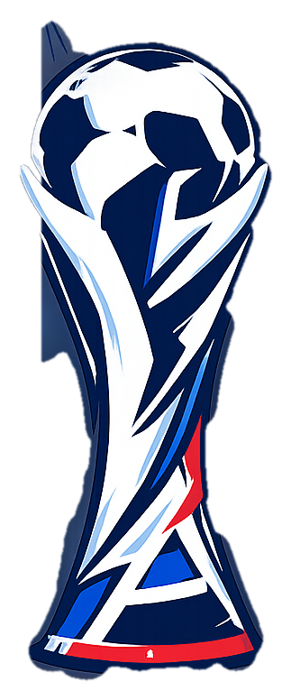

WORLD CUP
Babyfoot Edition
Connecting…
Choose Your Team
🟡 Player 1

Brazil
⚠ TAKEN — repick!
Choosing…
VS
20
🔴 Player 2

Germany
⚠ TAKEN — repick!
⚠ Both strips look alike — hard to tell apart
Choosing…
You
0 : 0
5:00
vs Bot
Opponent
✔
▼
Welcome
Power
Hold LMB
Loft
Tap RMB
FULL TIME
Brazil wins!
3 — 1
Quarter-Final
VS
Kick off
World Cup
Three matches to lift the trophy
GOAL!
Brazil scores!